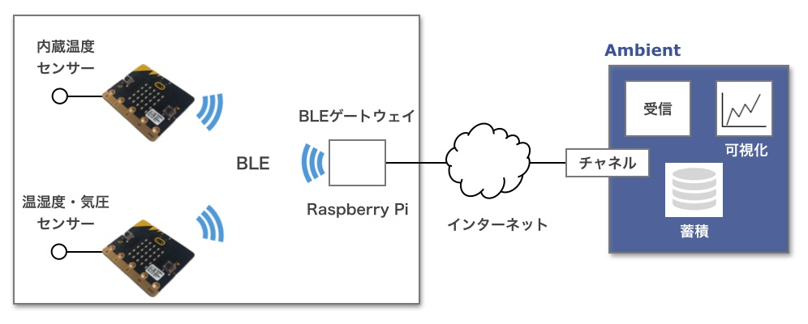
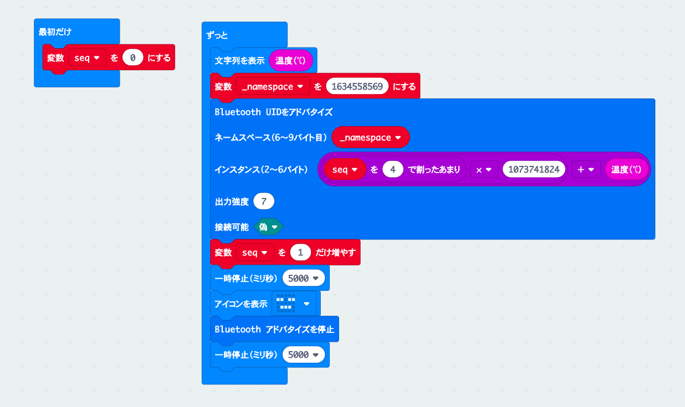
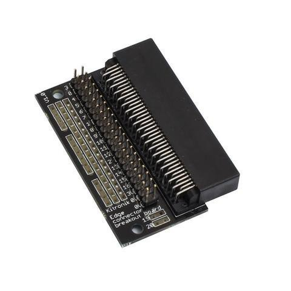

「AmbientでIoTをはじめよう」、第13回、第14回はmicro:bitを使って温度データーをBluetooth Low Energy (BLE) で発信し、 ゲートウェイ経由でAmbientに送って、記録し、グラフ化(可視化)します。 第14回はmicro:bitとゲートウェイをBLEブロードキャストモードで通信する方法を説明します。
コネクトモードでの通信は第13回「micro:bitで温度データーをAmbientに送りグラフにする(コネクトモード編)」をご覧ください。
micro:bitでBluetooth Low Energyを使うための開発環境の設定、Bluetooth機能ブロックの説明についても 「micro:bitで温度データーをAmbientに送りグラフにする(コネクトモード編)」をご覧ください。

プロセッサー内蔵の温度センサーを使って温度を測り、データーをBluetooth Low Energy (BLE) で発信します。 Raspberry Pi Zero WHをゲートウェイにしてBLEでデーターを受信し、IoTデータ可視化サービス「Ambient」に送って、グラフ化します。
プロセッサー内蔵の温度センサーはプロセッサーの発熱の影響を受けます。 その影響を避けるため、BME280を使って温度などを測るバージョンも開発します。
BLEデバイスの通信にはコネクトモードとブロードキャストモードがあります。 詳細は「BLE環境センサー・ゲートウェイ(Raspberry Pi編)」をご覧ください。
コネクトモードは双方向通信なので、ゲートウェイからセンサー端末のデーターを取得するだけでなく、センサー端末のモード設定をおこなうこともできます。 センサー端末は常にゲートウェイからのコネクトを待つため、消費電力が多くなりがちです。
ブロードキャストモードは一方向通信です。センサー端末からデーターを発信するには適した方式ですし、 5分に1回、10秒間だけブロードキャストするといった間欠動作をおこなうことで消費電力を低く抑えることも可能です。
micro:bitはEddystoneというフォーマットでデーターをブロードキャストします。
EddystoneはGoogleが公開しているBLEビーコンの規格です。
EddystoneにはUID(ユニークID)、URL、TLM(テレメトリ)、EID(エフェメラル(一時的な)ID)という四つのフレームタイプが定義されています。 micro:bitではこの内、UIDとURLが使えます。機能ブロックも「UIDをアドバタイズ」、「URLをアドバタイズ」が提供されています。
URLタイプは文字通りURLをブロードキャストするものです。 UIDタイプは10バイトのnamespaceと6バイトのinstanceからなるデーターが送れるので、UIDタイプを使って温度データーを送ります。
micro:bitの「Advertise UID」という資料を見ると、namespaceは最後の4バイト、instanceも最後の4バイトが使えるとあります。
「UIDをアドバタイズ」という機能ブロックの「ネームスペース」「インスタンス」それぞれに4バイトのデーターが入れられます。
ネームスペースはmicro:bitのEddystoneの説明にはURLをSHA-1でハッシュ化して先頭の10バイトを使う例が出ていますが、 実際には4バイトしか使えないので、’a’, ‘m’, ‘b’, ‘i’に対応する「0x616d6269」を指定することにします。 ブロックエディターには16進数が入れられないようなので、「0x616d6269」の10進数「1634558569」を入力します。
インスタンスは2ビットのシーケンス番号と1バイトの温度データーを次のように入れることにしました。
C言語風に書けば次のような式を
(seq % 4) << 30 | 温度 & 0xFF
ブロックエディターで次のように表しました。
「「「seq を 4 で割ったあまり」 x 1073741824」 + 温度」
ブロードキャストは一定時間(今回のプログラムでは5秒間)おこないます。 同じデーターをゲートウェイが複数回スキャンした時に、同じデーターだと分かり、クラウドには1回だけ送信するように、 データーにシーケンス番号を付加しています。
micro:bitのプログラムは次のようになります。

アドバタイジングデーターは次のようになります。
| バイト数 | タイプ | 値 | 意味 |
| 1 | AD Type | 0x16 | Service DATA |
| 2 | Service UUID | 0xFEAA | Eddystone |
| 1 | Frame Type | 0x00 | UID |
| 1 | TxPower | ||
| 10 | UID namespace | ||
| 6 | UID instance |
ブロードキャストモードのゲートウェイも「BLE環境センサー・ゲートウェイ(Raspberry Pi編)」で開発したものをベースにします。
スキャンしたデーターのAdTypeが「16b Service Data」で、値の最初の4文字がEddystoneを表す「aafe」のものがmicro:bitのアドバタイジングデーターです。 最後の20文字(10バイト)が「000000000000616d6269」のものが今回開発しているセンサー端末です。
値の32文字目の上位2ビットがシーケンス番号なので、それが前回見つけた値と異なっていれば新しいデーターです。 値の38、39文字目が温度データーです。それを取り出してAmbientに送信します。
ゲートウェイプログラムはGithubに公開しました。
内蔵の温度センサーはプロセッサーの発熱の影響を受けます。 そこで内蔵の温度センサーではなく、BME280をつないで温度、湿度、気圧を測定してAmbientに送るものも開発します。
micro:bitにセンサーなどを接続するには、「micro:bit用エッジコネクタピッチ変換基板」を使うのが便利です。 micro:bitのエッジコネクタのピンアサインはmicro:bitのMicroPythonの「入出力端子」に書かれています。

BME280はI2CとSPIの両方でアクセスできます。今回は高速なアクセスは必要ないので、I2Cでアクセスします。 micro:bitでデフォルトでI2C通信に使うピンはSCL=19ピン、SDI=20ピンです。BME280とは次のように接続します。
| micro:bit | BME280モジュール |
| GND | SDO |
| SCL(19) | SCK |
| SDA(20) | SDI |
| 3V | CSB |
| GND | GND |
| 3V | Vcore |
| ― | Vio |
Sparkfun社の「Weatherbit」という製品があります。温度、湿度、気圧、風速、雨量、土壌の温度、水分が測れるmicro:bitの拡張モジュールです。 この製品の温度、湿度、気圧の測定にBME280が使われていて、micro:bitでアクセスするための機能ブロックが公開されいます。
Block Editorで「高度なブロック」 > 「拡張機能」を選択し、「weatherbit」で検索するとWeatherbitの機能ブロックが見つかります。
これを選択すると、Weathrbitの機能ブロックが使えるようになります。
BME280の温度、湿度、気圧はそれぞれtemperature(C)、humidity、pressureという変数ですが、実際の値は次のように求めます。
温度(℃) = temperature(C) / 10
湿度(%) = humidity / 1024
気圧(hPa) = pressure / 25600
温度、湿度、気圧をEddystoneのUIDフレームに載せます。 micro:bitではinstanceの中の4バイトしか使えないので、この4バイト(32ビット)にシーケンス番号、温度、湿度、気圧をエンコードします。
C言語風に表現すると、次のような式になります。
(seq % 4) << 30 | ((気圧 - 400) & 0x3FF) << 20 | ((湿度 x 100) & 0x3FF) << 10 | ((温度 x 10) & 0x3FF)
micro:bitのプログラムは次のようになります。
micro:bitのアドバタイジングデータを見つけるところまでは、内蔵センサーのプログラムと同じです。 見つけたデーターの値の32文字目から39文字目までがシーケンス番号、気圧、湿度、温度を表しています。 エンコードの逆の処理で温度、湿度、気圧データーを取り出し、Ambientに送信します。
ゲートウェイプログラムはGithubに公開しました。
micro:bitとゲートウェイのプログラムを動かすと、温度、湿度、気圧を測定し、ゲートウェイ経由でAmbientに温度データーが送信され、グラフ表示されます。
この記事はアンビエントデーターの下島が担当しました。